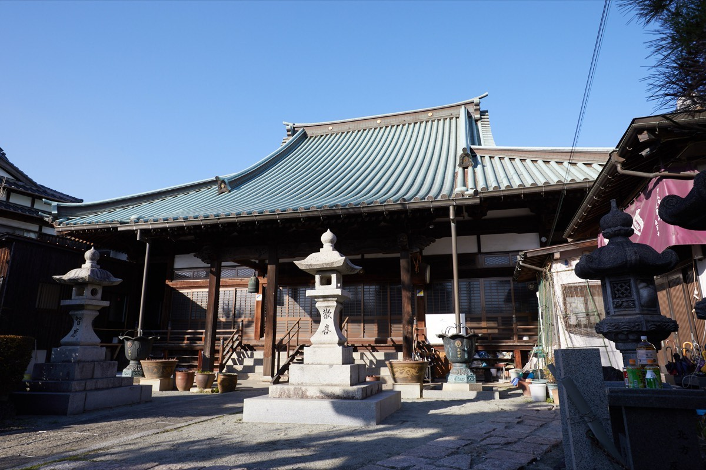
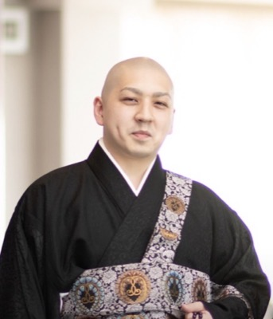

仲介なし。法名・火葬場随行込み。
葬儀後のご法事まで、永万寺が一貫してご相談を承ります。
最短即日対応 ｜ 年中無休
※お電話の際は「ミダクルを見た」とお伝えいただくとスムーズです

このようなお悩みはありませんか？
ミダクルは、北九州市小倉南区北方にある浄土真宗本願寺派 光應山永万寺が運営しています。仲介を挟まず、内容と金額がわかりやすい形でご案内します。
「毎回違うお寺さんが来て、故人のことを何も知らない」ということがありません。あなたの家族の"かかりつけ寺"として、ずっと寄り添います。
浄土真宗では戒名ではなく「法名」をお授けします。ミダクルでは法名授与が全プランに含まれています。後から追加料金を請求することはありません。
22時までにお電話いただければ、当日中に臨終勤行（枕経）にお伺いします。派遣サービスでは「葬儀の日に初めて来る」のが一般的ですが、ミダクルは最も心細いその瞬間から寄り添います。
葬儀場でのお勤めだけでなく、火葬場での炉前読経もお布施に含まれています。「葬儀が終わったらすぐ帰る」ということはありません。
通夜あり葬儀では、住職と僧侶による体制でのお勤めにも対応します。大切な儀式を最後まで確実にお勤めできるよう、寺院内で連携して対応します。
通夜あり葬儀は、3名体制でも145,000円を目安にご案内しています。
運営寺院について
ミダクルは、北九州市小倉南区北方にある浄土真宗本願寺派 光應山永万寺が運営する僧侶手配・葬儀読経相談サービスです。
永万寺は、地域の皆さまのご葬儀・ご法事・納骨・ご相談をお勤めしてきたお寺です。菩提寺のない方や、どこに相談すればよいかわからない方にも、永万寺が直接対応いたします。
すべて法名込み・出張料込みの総額表示です
| 内容 | 一般価格 |
|---|---|
| 一日葬（僧侶1名） 還骨初七日・火葬場随行込み | 80,000円 |
| 通夜あり葬儀（僧侶1名） 還骨初七日・火葬場随行込み | 140,000円 |
| 通夜あり葬儀（住職+僧侶2名） 還骨初七日・火葬場随行込み3名体制でもこのお布施目安 | 145,000円 |
| 内容 | 一般価格 |
|---|---|
| 三部経（約1時間のお経） | 35,000円 |
| 小経（約20分のお経） | 20,000円 |
| 納骨（小経と讃仏偈） | 25,000円 |
※上記はお布施の目安です。ご事情に応じてご相談ください。
※分割払いにも対応しております。
※生活上のご事情がある方はお気軽にご相談ください。
※あくまでお布施の目安ですので、詳しくは直接お訊ねください。
ご希望により、葬儀後のご法事・納骨・ご相談まで継続してお任せいただけます。
門徒の方には、年会費5,000円で、法要のご負担を抑えた寺院内価格をご案内しています。一般的に不安に思われやすい高額な寄付や、急なご負担をお願いするものではありません。
| 内容 | 一般 | 門徒 |
|---|---|---|
| 一日葬（僧侶1名） | 80,000円 | 60,000円 |
| 通夜あり葬儀（住職+僧侶2名） | 145,000円 | 120,000円 |
| 三部経（約1時間のお経） | 35,000円 | 20,000円 |
| 小経（約20分のお経） | 20,000円 | 5,000円 |
| 納骨 | 25,000円 | 10,000円 |
※上記はすべてお布施の目安です。詳しくは直接お訊ねください。
価格だけでなく、葬儀後まで相談できる関係性を大切にしています
| 項目 | 一般的な僧侶派遣 | ミダクル |
|---|---|---|
| 対応者 | 登録僧侶が対応 | 永万寺が直接対応 |
| 葬儀後の相談 | 別対応になる場合あり | 法事・納骨まで継続相談 |
| 法名 | 別料金の場合あり | 葬儀プランに含む |
| 火葬場随行 | 別料金の場合あり | 含む |
| 料金 | サービスにより異なる | 明朗な目安を掲載 |
| 関係性 | その場限りになりやすい | ご希望により門徒として継続可能 |
※一般的なサービス内容との違いを整理したものです。実際の対応範囲や料金は各サービスにより異なります。
お電話一本で、すべてお任せいただけます
受付時間 6:00〜23:00。ご逝去の状況やご希望をお伺いします。
22時までにお電話をいただければ、当日中に僧侶が駆けつけます。故人様のもとで最初のお勤めをいたします。
葬儀社が火葬場の予約を取り、日程が確定します。お布施の目安も事前にお伝えします。追加料金はありません。
通夜（ある場合）・葬儀・還骨初七日のお勤めから火葬場でのお見送りまで、僧侶が一貫して対応します。
四十九日、一周忌、三回忌…同じお寺の僧侶が一貫して寄り添います。ご希望により、門徒として継続してご相談いただけます。
北九州市を中心に、高速1時間圏内に対応

「大切な方を亡くされたご家族に、心からのお勤めをお届けしたい」——その一心で、ミダクルを始めました。菩提寺がないからといって、きちんとしたご供養を諦める必要はありません。お気軽にご相談ください。
お急ぎの方も、事前のご相談も。受付時間 6:00〜23:00。
※お電話の際は「ミダクルを見た」とお伝えいただくとスムーズです
運営：宗教法人 光應山永万寺（浄土真宗本願寺派）
〒802-0841 福岡県北九州市小倉南区北方3-47-1